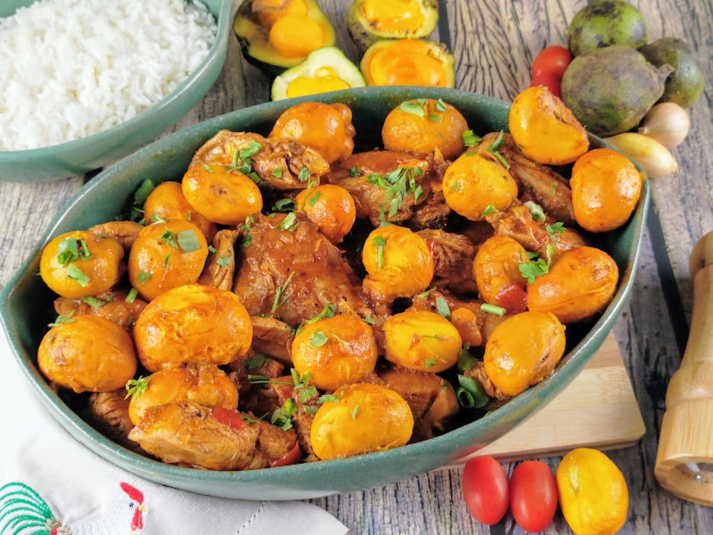

O prato Galinha-Caipira em Goiás é muito frequente ser feito e ser bem recebido, pelo fato de ser feito direto da galinha sem agrotóxicos e fermentos adicionais.
Bem-vindo ao nosso site de receitas!
Bem-vindo ao Tá no Fogo! 🔥
A galinha caipira é um prato tradicionalmente feito com aves criadas soltas, o que confere à carne um sabor mais intenso e textura firme.
Receitas Típicas do Estado
Aqui você conhecerá algumas das principais receitas do estado de Goiás
Receitas Autênticas
Pratos tradicionais na região do Goiás.
Fácil de Seguir
Fácil de Seguir
Instruções detalhadas e ingredientes acessíveis para todos os níveis de cozinha
Sabores únicos
Sabores Únicos, feito com amor e carinho (caseiros)
Galinha-Caipira
Sobre a Receita
A galinha caipira é um prato tradicionalmente feito com aves criadas soltas, o que confere à carne um sabor mais intenso e textura firme. A comida é preparada de diversas formas, geralmente cozida lentamente com temperos, podendo ser servida com acompanhamentos como arroz, polenta ou pirão. O preparo pode envolver dourar o frango antes de cozinhá-lo e adicionar ingredientes como cebola, alho, ervas e vegetais para enriquecer o sabor.
🧾 Ingredientes
1 galinha caipira inteira (cerca de 2 kg)
2 cebolas (300 gramas)
10 dentes de alho (30 gramas)
1 colher de sopa de páprica doce
Caldo de 1/2 limão
1 ramo de alecrim
3 folhas de louro
1 colher de sopa de cúrcuma
2 colheres de sopa de banha de porco (50 gramas)
1 xícara de chá de cheiro-verde (salsinha e cebolinha picadas)
2 colheres de sopa de óleo
2 colheres de chá de sal (ou a gosto)
2 colheres de chá de sal (ou a gosto)
👨🍳 Modo de Preparo
Reúna os ingredientes para fazer a galinha caipira, um prato saboroso e com gostinho de infância;
Corte o frango em pedaços em uma tábua e coloque uma chaleira para esquentar a água. Depois, transfira o frango para uma tigela. Quando a água estiver quente, despeje-a na tigela e lave os pedaços. Isso irá retirar quaisquer resquícios de penas ou impurezas;
Descarte a água. Em seguida, tempere o frango com limão, folhas de alecrim, pimenta-do-reino e sal. Misture com uma colher até os temperos espalharem e reserve a carne em um pote de vidro com fecho hermético na geladeira, de um dia para o outro;
Em uma tábua, descasque e corte a cebola em brunnoise (cubos de cerca de 0,3 mm). Descasque o alho e pique-o finamente. Em uma panela grande, no fogo médio para alto, coloque o óleo e a banha de porco para derreter. Adicione a cebola e o alho picado para dourar;
Retire o frango da geladeira e remova rapidamente as folhinhas de alecrim. Adicione o frango à panela e sele todos os lados. Nesse processo, se a carne começar a grudar muito, adicione um pouco de água. Repita esse processo até os pedaços de frango ficarem dourados;
Tempere com mais sal, a páprica, o louro e a cúrcuma. Misture com a colher e cozinhe por cerca de 3 minutos;
Despeje o líquido da marinada e mexa o fundo da panela para soltar o sabor. Tampe a panela e deixe cozinhando por cerca de 40 minutos (acompanhe o ponto da carne, pode demorar mais ou menos tempo). Quando a carne estiver macia, adicione cheiro-verde;
Sirva esta deliciosa galinha caipira com polenta, arroz ou outro acompanhamento de sua preferência. Bom apetite!
⏱️ Preparo
1 hora e 50 minutos minutos
🔥 Tempo de cozimento na panela
40 minutos
🕒 Total
aproximadamente 2 horas e 45 minutos
🍘 Rendimento
cerca de 7 a 8 pessoas
💰 Custo Médio
aproximadamente R$ 80 a R$ 100
Frango com Pequi
Sobre a Receita
O frango com pequi, fruta típica do cerrado brasileiro, é uma opção cheia de sabor, feita em apenas 1 hora, e bem diferente para um almoço especial. Se não encontrar pequi na sua cidade, você pode procurar por alguns lugares que vendem pela internet. Ou também, utilizar o pequi em conserva, que é mais facilmente encontrado nos mercados. Não deixe de experimentar!

🧾 Ingredientes
1 frango (2,2 kg)
16 pequis
4 dentes de alho amassados
1 colher de sopa de sal
1 colher de chá de pimenta-do-reino
1 colher de sopa de lemon pepper
1 colher de sopa de páprica doce
4 colheres de sopa de molho shoyu
1 colher de sopa de óleo
1 cebola média (90 gramas)
1 pimentão vermelho médio (190 gramas)
1 tomate médio (110 gramas)
2 colheres de sopa de extrato de tomate
900 ml de água para cozinhar
👨🍳 Modo de Preparo
Junte os ingredientes do frango com pequi. Aqui, vamos utilizar todas as partes do frango, mas você pode usar as de sua preferência, como coxa e sobrecoxa, coxas, coxinha da asa, entre outras;
Em uma tábua, coloque o frango e corte-o em pedaços, separando coxas, sobrecoxas, peito e o restante das partes. Lembre-se que é importante cortar rente as articulações para o processo de corte ser mais fácil;
Coloque os pedaços do frango em uma tigela e tempere com alho, sal, pimenta-do-reino, lemon pepper e molho shoyu. Com as mãos, misture os ingredientes e massageie o frango para que o tempero pegue bem. Cubra com pano e deixe marinando por cerca de 30 minutos;
Se for retirar a polpa do pequi em casa, o processo é rápido. Com uma faca, faça um corte completo em volta do pequi, abra o fruto e retire as bolinhas amarelas de dentro. Essas bolinhas que você vai utilizar na receita - descarte as cascas;
Descasque e pique a cebola em cubos pequenos. Retire as partes brancas e as sementes do pimentão e corte-o em cubinhos também. Lave e pique o tomate em cubos pequenos;
Após o tempo da marinada, em uma panela grande, em fogo médio, aqueça o óleo e adicione o frango para fritar. Frite por cerca de uns 10 minutos ou até o frango ficar dourado, mexendo às vezes para não queimar. Adicione o pequi e refogue por mais 2 minutos, mexendo sempre;
Depois, acrescente a cebola e refogue por mais 3 minutos. Junte o pimentão e o tomate picado, misturando bem para incorporar. Tempere com páprica e um pouco de sal. Mexa e refogue os ingredientes até que o tomate comece a desmanchar, cerca de 4 minutos;
Adicione água até quase cobrir o frango e deixe ferver. Assim que ferver, cozinhe por mais 20 minutos, ou até a carne ficar macia e o caldo engrossar. Prove o molho e, se necessário, acerte sal e temperos;